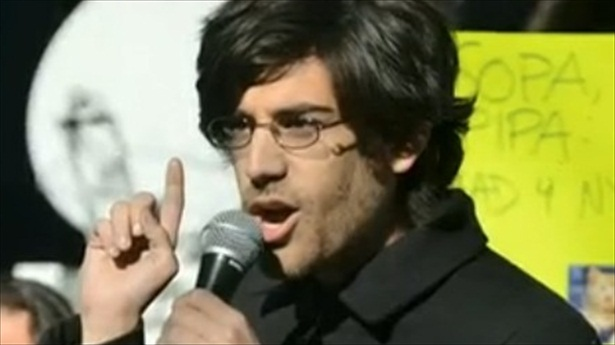

Quelques dates clés
- Aaron Hillel Swartz est né le 8 novembre 1986 à Chicago.
- A 12 ans, ils crée the Info Network, une encyclopédie collaborative comme wikipédia.
- A 14 ans, il participe à l'élaboration de la spécification 1.0 du format RSS, une technologie permettant de recevoir en direct les mises à jours de sites web.
- A 15 ans, il contribue au développement informatique de la licence Creative Commons, alternative aux licences du droits d'auteur standard.
- En 2007, il crée le site Jottit, un site permettant de créer une page Web le plus simplement possible (entrer un titre, un texte, et cliquer sur publier).
- Toujours en 2007, il élabore avec john Gruber le langage Markdown.
- En 2008, il travaille avec Virgil Griffith sur Tor2web, un proxy Http pour des services cachés Tor.
- En 2011, il est accusé dans l’affaire JSTOR.
- Le 11 janvier 2013, Aaron Swartz s’est pendu dans son appartement de Brooklyn.

Activités idéologiques et militantes
En 2009, Il fonde le mouvement Demand Progress avec David Segal. Mouvement qui défend la liberté d’expression et la libre circulation sur internet sans censure. (cause principale: refus de la mise hors-la-loi de Wikileaks, opposition à la censure sur Facebook et contre le projet de loi SOPA. Son dernier projet de développement est la plate-forme SecureDrop permettant aux lanceurs d’alerte de fournir informations et documents aux journalistes de façon sécurisée. Il était également un wikipédien actif.
